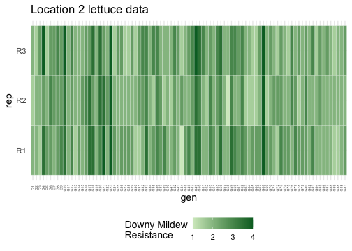

heritable
heritable.RmdMotivation
A key goal in any breeding trial is to calculate heritability, which
describes the extent of which a trait of interest is underpinned by
genetic variance. heritable is the one-stop shop for
heritability calculations in R. Here, we have implemented existing
methods for heritability to aid more reproducible and transparent
reporting of it’s calculations. This vignette is a brief overview of
heritable’s workflow and key features.
heritable is compatible with model outputs from asreml and
lme4,
extracting relevant variance components from flexible mixed-model
specifications to estimate heritability across complex
experimental designs including including multi-environment
trials.
Installation
Note that this package is under active development. You can install the development version of heritable from GitHub with:
A demo
Let’s work with the lettuce dataset that contains
phenotypic measurements of downy mildew resistance score of 89 lettuce
genotypes across 3 locations (environments), with 3 replicates.For
demonstration purposes, we will use a subset of single environment
(loc == L2), which is displayed in the plot below.
library(dplyr)
head(lettuce_phenotypes)
#> # A tibble: 6 × 4
#> loc gen rep y
#> <fct> <fct> <fct> <dbl>
#> 1 L1 G1 R1 2
#> 2 L1 G1 R2 2.5
#> 3 L1 G2 R1 1.5
#> 4 L1 G2 R2 2
#> 5 L1 G3 R1 1
#> 6 L1 G3 R2 2
lettuce_subset <- lettuce_phenotypes |>
filter(loc == "L2")
We also have access to a genomic relationship matrix (GRM) calculated from 300 genetic markers that we will use for narrow-sense heritability.
# View the structure of the GRM
dim(lettuce_GRM)
#> [1] 89 89
lettuce_GRM[1:5, 1:5]
#> G1 G2 G3 G4 G5
#> G1 268 9 13 -3 -46
#> G2 9 270 -19 -50 104
#> G3 13 -19 250 21 -5
#> G4 -3 -50 21 281 21
#> G5 -46 104 -5 21 296Broad-sense heritability
Broad-sense heritability represents the ratio of genetic variance over phenotypic variance. Genetic variance here incorporates additive, epistatic and dominance effects.
Here, we have provided code for both asreml and
lme4 to fit a model with genotype as a random effect.
Note that all heritability estimates should be the same
as the data is balanced.
# Fit an asreml model with genotype as random effect
library(asreml)
lettuce_asreml <- asreml(
fixed = y ~ rep,
random = ~ gen,
data = lettuce_subset,
trace = FALSE
)
# Fit an lme4 model with genotype as random effect
library(lme4)
lettuce_lme4 <- lmer(y ~ rep + (1 | gen), data = lettuce_subset)Use the H2() wrapper to compute broad-sense
heritability.
The wrapper has three key inputs
-
model, yourlme4orasremlobject -
target, the name of your genotype/varietal/line variable in your model e.g."gen" -
method, which method ofH2calculation do you want. By default, all methods are computed.
# Calculate broad-sense heritability using multiple methods
H2(lettuce_asreml, target = "gen", method = c("Standard", "Cullis", "Oakey"))
#> Standard Cullis Oakey
#> 0.8294971 0.8294971 0.8294971
H2(lettuce_lme4, target = "gen", method = c("Standard", "Cullis", "Oakey"))
#> Standard Cullis Oakey
#> 0.8294971 0.8294971 0.8294971Alternatively if you want a single method, you can call each method’s
function directly. These are named with the H2_ prefix,
followed up the method name.
H2_Cullis(lettuce_asreml, target = "gen")
#> [1] 0.8294971
H2_Delta(lettuce_lme4, target = "gen")
#> [1] 0.8294971Learn more about each method by looking up their help file
?H2_Cullis
Narrow-sense heritability
Narrow-sense heritability is currently only implemented for
asreml model object as there is no native
workflow to fit a GRM using lme4. However it is possible
using other extension packages such as lme4qtl
and lme4breeding
In the following model, we will fit the lettuce_GRM
genomic relationship matrix (GRM) using asreml::vm()
# Fit model with GRM for narrow-sense heritability
lettuce_asreml_grm <- asreml(
fixed = y ~ rep,
random = ~ vm(gen, source = lettuce_GRM),
data = lettuce_subset,
trace = FALSE
)Similar to H2(), we can use the h2()
wrapper to compute narrow-sense heritability. Remembering to
specify:
-
model, yourasremlobject -
target, the name of your genotype/varietal/line variable in your model e.g."gen" -
method, which method ofh2()calculation do you want. By default, the function will compute all available methods. Currently only"Oakey"and"Delta"are implemented forh2().
An additional source argument is required to provide
h2() with the genetic covariance structure used for model
fitting. If this argument is not supplied, the function will attempt to
locate the covariance structure in the global environment. Since we
specified the structure using the GRM lettuce_GRM, we
provide it explicitly to h2().
# Calculate narrow-sense heritability
h2(lettuce_asreml_grm, target = "gen", method = c("Standard", "Cullis", "Oakey"),
source = list(lettuce_GRM = lettuce_GRM))
#> Standard Cullis Oakey
#> 0.8242839 0.8759621 0.5857853Similarly, you can call the single method sub-functions using the
prefix h2_ followed by the method name. Here we are
calculating pairwise heritability between every genotype. See
?h2_Delta_pairwise() to learn more.
Alternative output formats
Depending on which heritable function, the output will
vary:
-
H2()wrappers will return a named vector bymethod -
H2_Delta()will return a numeric value -
H2_Delta_by_genotype()will return a named list according to thetargetvariable -
H2_Delta_pairwise()will return a symmetrical matrix for all pairwise combinations oftarget
If you interested in comparing heritability values across multiple
models or methods, we can leverage tidyverse functions to
wrangle the output as a dataframe/tibble
library(purrr)
library(tidyr)
tibble(
model = list(lettuce_lme4, lettuce_asreml) # Include model as a list variable
) |>
mutate(H2 = map(model, # Apply the `H2()` function over each model object
~H2(.x, target = "gen", method = c("Standard", "Delta", "Oakey"))
)
)|>
unnest_wider(H2) # Expand the output
#> # A tibble: 2 × 4
#> model Standard Delta Oakey
#> <list> <dbl> <dbl> <dbl>
#> 1 <lmerMod> 0.829 0.829 0.829
#> 2 <asreml> 0.829 0.829 0.829Heritability in multi-environment trials
Starting with version 0.2.0, heritable supports
heritability estimation from flexibly specified mixed models, extending
beyond single-environment trials. In this section, we demonstrate
heritability estimation for a multi-environment trial using a
genotype-by-environment (G×E) model.
When a model contains a G×E interaction, the definition of heritability become ambiguous as each interaction term can either be treated as nuisance variation or genetic variation specific to the corresponding environment. We illustrate how we address this ambiguity by showing the calculation of three heritability definitions:
Conventional heritability, which is based only on the genotype main effect and treats G×E variation as nuisance variation.
Marginal heritability, which defines the effect of a genotype as the combination of its main effect and its G×E effects averaged across environments. Heritability is then calculated with respect to this marginalised genotype effect and can therefore be interpreted as a global measure of the reliability of average genotype performance across environments.
Stratified heritability, which defines the effect of a genotype within a particular environment as the combination of its main effect and its G×E effect in that environment. It therefore measures the reliability of genotype performance within a specified environment.
We first fit an lme4 model to the complete lettuce
dataset without subsetting to a single environment:
lettuce_lme4_gxe <- lmer(
y ~ rep + (1 | gen * loc),
data = lettuce_phenotypes
)The random-effects expression (1 | gen * loc) expands to
random effects for genotype, location, and their interaction:
(1 | gen) + (1 | loc) + (1 | gen:loc)Again, we call H2() (or h2() for
narrow-sense) on the fitted model object. For multi-environment models,
the following arguments control which definition of heritability is
calculated:
marginal: a logical specifies whether marginal heritability should be calculated.stratification: a one-row data frame specifies the environmental stratum, or combination of strata, within which heritability should be estimated.
When stratification is not supplied, the
marginal argument determines whether conventional or
marginal heritability is returned.
# Conventional heritability
H2(lettuce_lme4_gxe, target = "gen", marginal = FALSE)
#> Cullis Oakey Piepho Delta Standard
#> 0.7818483 0.7818483 0.7806165 0.7818483 0.7732908
# Marginal heritability
H2(lettuce_lme4_gxe, target = "gen", marginal = TRUE)
#> Cullis Oakey Piepho Delta Standard
#> 0.8918420 0.8816507 0.8895969 0.8918420 0.8895969 When stratification is supplied, stratified heritability
is calculated for the specified environmental conditions. For example,
heritability within location L1 is calculated as
follows:
H2(lettuce_lme4_gxe, target = "gen", stratification = data.frame(loc = "L1"))
#> Cullis Oakey Piepho Delta Standard
#> 0.7870175 0.7780589 0.7250292 0.7870175 0.7250292 Confidence intervals
To compute confidence intervals, first store the output from
H2() or h2(). A heritable object
retains the fitted model and the arguments used in the original
heritability calculation, allowing the calculation to be repeated for
each parametric-bootstrap sample.
estimate <- H2(lettuce_lme4, target = "gen", method = c("Cullis", "Standard"))
confint(estimate, B = 100, seed = 2026)
#> 2.5 % 97.5 %
#> Cullis 0.7792096 0.9395049
#> Standard 0.7792096 0.9395049Here, B specifies the number of bootstrap replicates. A
larger value of B generally provides more stable confidence
intervals but requires additional computation.
Parametric bootstrap is computationally intensive because each bootstrap replicate involves three main steps:
- simulating a new response from the fitted mixed model;
- refitting the model to the simulated data; and
- extracting the variance components and recalculating heritability.
The computational cost can therefore become substantial for large or
complex models, particularly when a large number of bootstrap replicates
is requested. heritable provides two ways to accelerate
this calculation.
Parallel computation
The first approach is to distribute the bootstrap replicates across
multiple workers. The parallel, ncpus, and
cl arguments are passed to the underlying bootstrap
routine; see ?boot::boot for further details.
As a general rule of thumb, use parallel = "multicore"
on non-Windows systems and parallel = "snow" on Windows.
The ncpus argument specifies the number of workers.
For example, the following code distributes 100 bootstrap replicates across five workers:
confint(estimate, B = 100, parallel = "snow",ncpus = 5)
#> 2.5 % 97.5 %
#> Cullis 0.7731271 0.8911410
#> Standard 0.7731271 0.8911410With five workers, each worker performs approximately
B / 5 bootstrap replicates, although the exact allocation
may vary.
On a non-Windows system, the corresponding call is:
# Not run
confint(estimate, B = 100, seed = 2026, parallel = "multicore",ncpus = 5)For more control over a snow cluster, a cluster object can be created
explicitly and supplied through cl:
# Not run
cl <- parallel::makeCluster(5)
confint(estimate, B = 100, seed = 2026, parallel = "snow", cl = cl)
parallel::stopCluster(cl)When using asreml, the number of parallel workers must
not exceed the number of available asreml licences.
Algorithmic acceleration
The second approach reduces computational cost through algorithmic acceleration, but may be less numerically stable. It does so by:
- approximating required matrix pseudoinverses using ridge penalties rather than exact positive-semidefinite matrix inversion; and
- calculating prediction- and estimation-error variance matrices by solving mixed-model equations rather than deriving them through direct inversion of marginal response covariance matrices.
To use this approach, set the global option
exact_psd_inv to FALSE and pass
solver = "LMM" to H2() or
h2():
# Default, numerically stable computation
default_time <- system.time({
estimate_default <- H2(
lettuce_lme4,
target = "gen",
method = c("Cullis", "Standard")
)
ci_default <- confint(
estimate_default,
B = 100,
seed = 2026
)
})
# Accelerated, approximate computation
previous_exact_psd_inv <- getOption("exact_psd_inv")
options(exact_psd_inv = FALSE)
fast_time <- system.time({
estimate_fast <- H2(
lettuce_lme4,
target = "gen",
method = c("Cullis", "Standard"),
solver = "LMM"
)
ci_fast <- confint(
estimate_fast,
B = 100,
seed = 2026
)
})
# Restore the previous option
options(exact_psd_inv = previous_exact_psd_inv)
default_time - fast_time
#> user system elapsed
#> 0.97 0.07 0.78 For small models, the difference in runtime may be modest. The improvement generally becomes more apparent as the number of observations, random effects, environments, or bootstrap replicates increases. However, algorithmic acceleration may produce less numerically stable results than the default calculation.
Parallel computing and algorithmic acceleration can also be used together.
Interested in complex models?
Finally, we emphasise that heritable is designed to work
with complex mixed models specified by the user. This includes, for
example, deeply nested lme4 models:
# Not run: this model was fitted to confidential data that are not
# included in the vignette and is shown for demonstration only.
lme4::lmer(
y ~ Type * Treatment * Stage +
(1 | Genotype) +
(Stage | Genotype / Treatment) +
(1 | Date) +
(1 | Plot / Replicate),
data = df
) |>
heritable::H2(target = "Genotype")
#> Cullis Oakey Piepho Delta Standard
#> 0.5793787 0.5969357 0.4619369 0.5793787 0.4592437It also supports asreml models with structured residual
variation, including spatial residual models:
# Not run: this model was fitted to confidential data that are not
# included in the vignette and is shown for demonstration only.
asreml::asreml(
fixed = y ~ 1,
random = ~ Line + Range + Row + RowRep:ColRep,
residual = ~ ar1(Range):ar1(Row),
data = df
) |>
heritable::H2(target = "Line")
#> Cullis Oakey Piepho Delta Standard
#> 0.9545024 0.9545024 0.9544771 0.9545024 0.9518358To work with an asreml model object,
heritable must parse the variance-modeling special
functions used in the model formula and reconstruct covariance matrices
from the estimated variance parameters.
The package currently supports several commonly used structures,
including vm() and ar1(). However,
asreml provides many additional variance structures and
combinations that may appear in more complex models.
We welcome community contributions that extend support for additional
asreml variance structures. See GitHub issue #51 for
details.